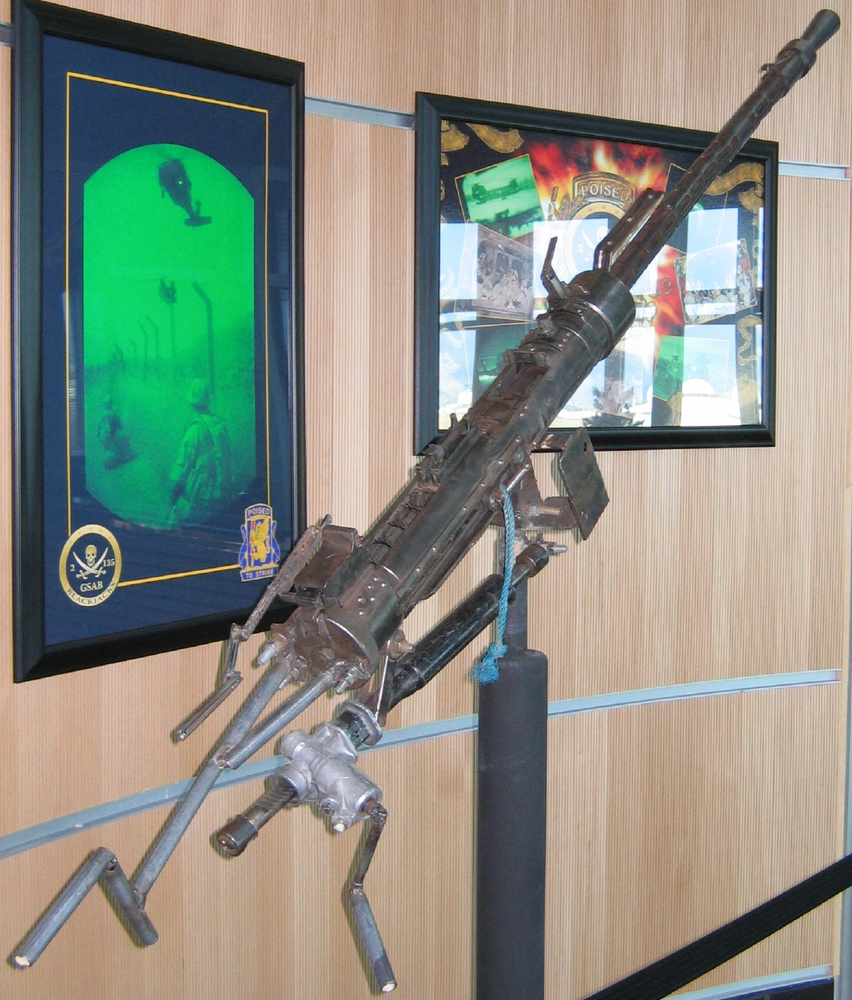

Крупнокаліберний кулемет Володимирова танковий (скор. КПВТ, індекс ГРАУ — 56-П-562Т) — модифікований варіант однойменного піхотного кулемету для озброєння бронетехніки. Може застосовуватися як для стрільби по наземних або надводних цілях, так і для ураження низьколітаючих засобів повітряного нападу (літаків і гелікоптерів) супротивника [1]. Є досить потужним засобом вогневої підтримки піхоти і танків у будь-яких умовах бойової обстановки [2], призначений для боротьби з легкоброньованими цілями (бронеавтомобілями, бронетранспортерами, бойовими машинами піхоти, протитанковою артилерією) [3] [4] також стрільби по скупченням піхоти.В умовах відсутності у противника укріпленої лінії оборони або окремих опорних пунктів із залізобетонними фортифікаційними спорудами, а також важкої бронетехніки, може самостійно вирішувати широкий спектр вогневих завдань (у зв'язку з чим кулемет є на озброєнні не тільки армій та сухопутних компонентів флотів, а й внутрішніх військ), прикордонних військ, підрозділів особливого призначення та швидкого реагування міліції та поліції, та інших передбачених та не передбачених законом озброєних формувань).Для підвищення бойової ефективності одиниці бронетехніки, як самостійної вогневої одиниці, КПВТ встановлюється в башті, що обертається, разом з кулеметом ПКТ, який застосовується для ураження неброньованої техніки і живої сили противника поза укриттями. Автоматика кулемету реалізує принцип використання енергії віддачі за короткого ходу ствола.КПВТ забезпечує ефективне ураження групових і повітряних цілей з відривом до 2000 метрів, [3] але досвідчені оператори можуть вести досить ефективний вогонь з цілям і більш віддаленій відстані, залежно від рівня їх індивідуального майстерності, ступеня зносу ствола і якості боєприпасів.
